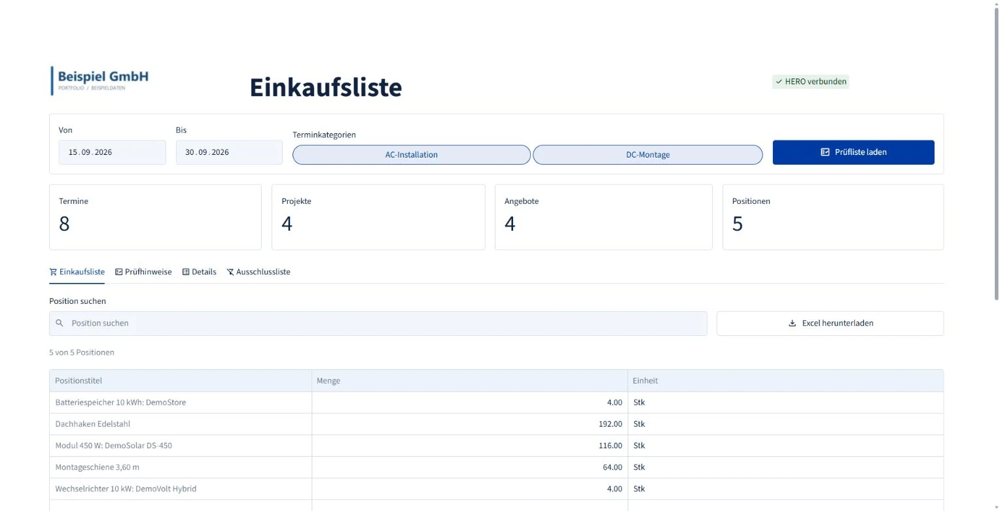

Apps & Automationen
Materialplanung für PV-Montagen
Die Anwendung ordnet Montageterminen die gültigen Angebote zu und übersetzt verkaufte Systeme in bestellbare Komponenten. Einkauf und Office erhalten eine bearbeitbare Materialliste mit Bezug zum jeweiligen Projekt.
Weniger manuelle Angebots- und Positionsprüfung: Die Anwendung bündelt den Bedarf; mehrdeutige Angebote und wiederholte Montagetermine liegen gezielt zur Prüfung vor.

Drei Angaben bestimmen den Materialbedarf
Zeitraum und Montageart legen die Auswahl fest.
Angenommene Angebote liefern den beauftragten Umfang.
Verkaufte Systeme werden in Stückzahlen übersetzt.
Welche Termine und Angebote tragen den Bedarf?
- Ein angenommenes Angebot
- Dieser Angebotsstand hat Vorrang.
- Mehrere angenommene Angebote
- Standardmäßig fließen alle angenommenen Angebote ein. In der Prüfliste lässt sich die Auswahl bei Bedarf auf eine aktive Angebotsnummer begrenzen.
- Kein angenommenes Angebot
- Nur ein eindeutig aktives Angebot kann automatisch führen. Mehrere aktive Angebote bleiben zu klären.
Vom Speichersystem zu bestellbaren Einzelteilen
Für eine unterstützte Baureihe mit 5-kWh-Modulen und einem Standfuß je System.
Kapazität bestimmt die Module je System; die Angebotsmenge vervielfacht alle benötigten Teile.
Eine Arbeitsgrundlage für den Einkauf
Jeder neue Lauf liest Termine, Projekte, Kontakte, Angebote und Positionen direkt aus dem CRM-/ERP-System. Zeitraum, Kategorien und Ausschlussliste sind pflegbar; Positionen werden mit Prüfhinweisen und Herkunft angezeigt.
Die datierte Tabellenmappe enthält bearbeitete, gefilterte, gruppierte und rohe Ansichten. So lässt sich eine Gesamtmenge bis zur ursprünglichen Angebotsposition zurückverfolgen.
Eine geänderte Ausschlussliste verwirft den geladenen Lauf. Prüfauswahl und Excel-Ergebnis liegen in der Sitzung. Nach Änderungen im Quellsystem wird neu geladen. Lagerbestand, Bestellung und Lieferfähigkeit werden anschließend im Beschaffungsprozess geprüft.